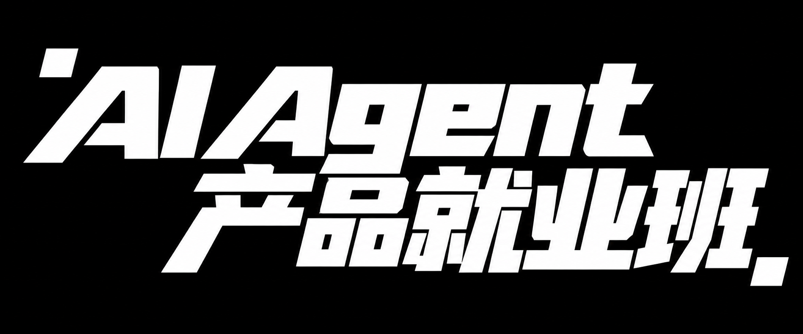

看懂AI 岗位要求
理解大模型的能力与边界，读懂招聘要求，找到与你的业务经历和能力基础匹配的切入点。
岗位能力图谱 · Token / 上下文 · 幻觉与边界

转行 AI，争取更高薪资机会。
从运营经验出发，学会用 AI 创造价值。从运营切入，打开新机会
想转行 AI、争取高薪，却不知道从哪开始？
你需要看懂 AI 行业在招什么人，哪些经验能迁移，以及自己还要补齐哪些能力。
重复、标准化的执行任务正被 AI 重构。只会生成文案、整理资料还不够，更重要的是定义任务、判断结果，解决实际业务问题。
课程从 AI 产品运营切入，学习大模型、数据训练、模型评测、RAG 与 Agent。用技术应用补齐能力，让业务经验成为转行的起点。
想抓住 AI 行业红利，先让自己具备创造价值的能力。用项目、作品集和面试表达，为新的职业机会做好准备。
把这四项能力练扎实
理解大模型的能力与边界，读懂招聘要求，找到与你的业务经历和能力基础匹配的切入点。
岗位能力图谱 · Token / 上下文 · 幻觉与边界
掌握数据、训练与评测的基本方法。能定位模型问题、设计改进方案，跨过业务与技术之间的沟通壁垒。
SFT / LoRA · 偏好数据 · 评测 / Badcase
串起工作流、知识库和工具调用。把重复环节交给 AI，把你的判断用在任务设计、质量审核和结果迭代上。
Workflow / MCP · RAG / Memory · Agent MVP
用项目、评测结果和复盘记录讲清你解决了什么问题、做出了哪些贡献，让简历和面试表达有事实支撑。
PRD / 作品集 · 贡献与成果 · 模拟面试
把一线经验变成行动
CAREER MENTOR / 就业导师
得到运营负责人
BUSINESS MENTOR / 课程导师
明星知识付费操盘手
学技术 · 做实战 · 练求职
先知道岗位要什么，再补齐 AI 技术应用基础，通过业务实战形成项目证明，最后落实到简历、面试和投递行动。
先找到适合自己的切入口，建立学习与求职路线。
行业与岗位：拆解 AI 岗位地图、招聘能力要求与职业方向，理解模型和应用的基本术语。
工具与实践：上手 Prompt、Dify / Coze、Cursor、Claude Code / Codex 与 GitHub，完成第一个小应用。
岗位术语拆解 · 工具笔记 · 第一个 AI 小应用
补齐技术应用基础，知道怎样判断 AI 做得好不好。
数据与训练：练习数据清洗、标注规范、SFT 样本、LoRA 实操与偏好数据，理解模型改进流程。
对齐与评测：学习 RLHF / DPO、评测集、上线验收、A/B Test 与 Badcase 回流，让结果判断有依据。
标注规范 · 训练样本 · LoRA 实操记录 · 模型评测报告
把单次对话，升级成能够执行任务的业务流程。
架构与工具：学习单 Agent / 多 Agent、API / Tool / MCP 与 Dify 工作流，明确每一步的输入、动作和检查点。
知识与策略：练习 RAG 文档切分、召回与引用，设计 Memory 和 Agent 策略，让知识真正用于任务。
Agent 原型 · Tool list · 项目知识库 · 需求文档
用自己的业务经验出题，用 AI 做出可以检验的结果。
产品方法：拆解大厂 AI 案例，练习立项、竞品分析、产品架构与轻量 PRD，把业务问题转成可执行需求。
开发与迭代：通过 Vibe Coding 完成 Agent MVP，以批量评测与 Badcase 归因持续改进，留下项目证据。
立项报告 · PRD · 可演示的 Agent MVP · 评测与迭代证据
让招聘方看见你的岗位匹配度、项目贡献和成长潜力。
作品整理：对照 JD 梳理项目经历、个人贡献与成果指标，完成作品集与五分钟项目讲述。
面试与投递：练习技术面、HR 面与常见追问，制定投递 SOP，通过反馈和复盘调整求职策略。
简历终版 · 项目作品集 · 模拟面试反馈 · 投递计划
用业务结果证明价值
把你熟悉的业务，变成 AI 实战项目。
以运营知识助手为例：接入活动规则与历史案例，辅助整理活动方案，并由人核验规则、判断质量和推进决策。
找到值得解决的任务，明确目标、输入与验收标准。
把业务资料接入 RAG 知识库，让回答有来源可核对。
用工具与工作流组织 AI 执行，在关键节点加入人工审核。
记录耗时、质量与错误，依据评测和 Badcase 持续改进。
需求与架构 · 可演示 MVP
评测报告 · 迭代记录
做产品是训练应用能力的一种方式，核心是证明你能借助 AI 解决问题。项目结合个人经历选择，以可核验的过程、贡献与结果形成求职作品。
给准备抓住机会的你
有运营、内容、用户、营销或其他业务经验，希望切入 AI 产品运营相关岗位，弄清哪些经验可迁移、还差哪些能力。
日常任务正在被 AI 改变，希望学会设计任务、组织人机协作和判断结果，把精力放在更有价值的工作上。
用过 AI，却还缺少系统方法和求职证明。希望补齐技术应用基础，用实践项目与作品集迈出转型的一步。
每周学习，也每周交付
技术讲解与任务实战
09:30–12:00 / 14:00–17:00
产品交流会
讲项目、提问题，练习表达自己的判断。
周刊领读
跟进行业变化，理解新概念能用在哪些工作里。
作业点评
对照任务要求查缺补漏，带着反馈进入下一轮实践。
每周日布置核心作业，周三提交初稿，周五集中点评。第 5 周作业在结课后周五进行终版点评。
20 人以内线上小班
1 位主讲 + 2 位助教教学配置
毕业后 6 个月求职服务
报名后 1 年内AI 更新内容学习
课程面向有运营或业务经验、愿意补齐 AI 应用能力的人。从模型认知、Prompt 和可视化工具开始，逐步接触工作流、知识库、评测与 AI 辅助开发。需要熟练使用电脑，并预留时间完成作业；部分岗位还会要求编程或特定行业经验。
这个方向能连接你已有的需求理解、内容判断、数据分析和业务协作经验。课程围绕 AI 产品运营、模型数据与评测运营、Agent 应用运营建立能力，再通过产品思维与项目实践逐步进阶，不是覆盖所有 AI 岗位的通用培训。
争取更好的工作与薪资，是学习的目标。课程提供能力训练、项目实践和求职准备，但录用与薪资还取决于过往经历、实践投入、岗位匹配度和招聘环境，不承诺五周转行成功、入职大厂或特定薪资。
AI 正在改变重复、标准化任务的做法，并不等于所有岗位都会被替代。学习重点是任务设计、业务判断、质量审核与迭代：知道什么该交给 AI，什么需要人负责，并能检验最终结果，形成自己的工作价值。
课程核心是掌握 AI 技术的应用基础，并把它用于实际业务。Agent 和产品项目用于检验能力、形成求职证据，不以独立开发或创业为目标。入门使用可视化工具，后续接触 AI 辅助开发与 Python 批量评测。
你可以整理自己的 Agent 项目、训练与评测材料、项目文档、简历和作品集，带着模拟面试反馈继续求职。毕业后享有 6 个月求职服务期；报名后 1 年内，可继续学习后续课程中 AI 部分的更新内容。
让 AI 成为你下一阶段的职业竞争力。
转行有方向 · 能力有训练 · 求职有准备